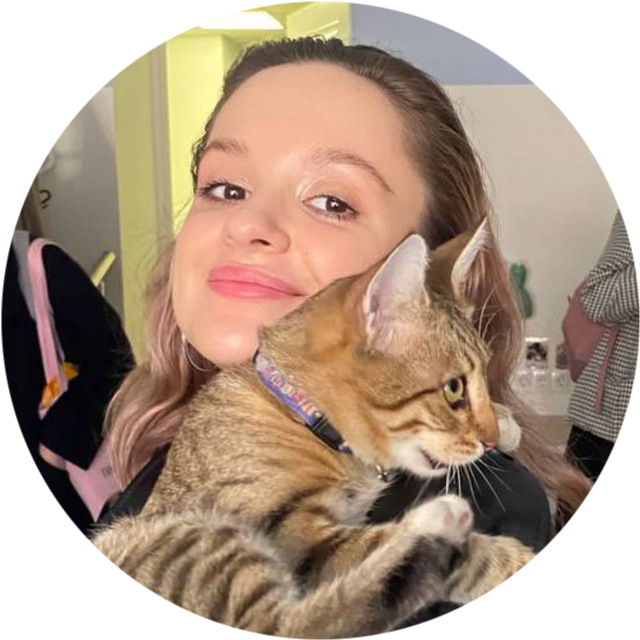

просмотров на каждом из двух роликов в портфолио
ЕЛИЗАВЕТА ЕГОРУШКИНА / МОСКВАКРЕАТОР × ПРОДЮСЕР
ПОРТФОЛИО, 2026
ПОРТФОЛИО, 2026
ДЕЛАЮ
ШУМсо смыслом.
Придумываю то, что хочется переслать.
Собираю людей и довожу идею до запуска.
Да, смешно. Да, по брифу.
ИНТЕРНЕТ — МОЯ РАБОЧАЯ СРЕДА

могу в менеджмент.
ПО ПРОСМОТРАМ1 млнна ролике. не на словах.
Идея → сценарий → продакшен → запуск → аналитикаПруфы ниже ↓
01 / ВИРАЛЬНОСТЬ С ПРУФАМИСкрины убедительнее прилагательных.
«Залетело» —
это сколько?
Проверяю чувство юмора на реальной аудитории. Вот результаты личного контента — отдельно от клиентских проектов.
показов на предоставленном скрине аналитики
взаимодействий · 3,5К лайков
вовлечённость — 1,3%
Источник: личное портфолио и скрин аналитики. Точный период и год на скрине не указаны; показатели разных площадок и периодов не суммируются.
02 / ОТ «А ЧТО, ЕСЛИ» ДО «УЖЕ В ЭФИРЕ»Исходное портфолио ↗
Серьёзные бренды.
Нескучные идеи.
Спецпроекты, коллаборации и контент.
Внутри каждого кейса — моя роль.
Потому что «мы сделали» бывает разным.
* 1000+ комментариев — по публикации канала «Давай ещё покрутим», приведённой в портфолио. Это показатель проекта X5, созданного командой; мой вклад — идея бота.
03 / ПЕРЕСЛАНО МНОГО РАЗМой X ↗
На работе — креатор.
В интернете — тоже.
Мои посты попадают в маркетинговые Telegram-каналы, а шутки становятся мемами. Про это я даже написала стендап.
Чувство юмора —
это навык.
Я его качаю.
04 / ПРИВЕТ, БУРГЕР КИНГТа самая вакансия ↗
У вас — огонь.
У меня — идеи.
Хочу делать маркетинговые коммуникации, которые обсуждают. И отвечать за путь от концепции до запуска.
Придумать, а потом сделать
В «виноу» работала с контентными стратегиями и спецпроектами: концепция, механика, сценарии, ТЗ креаторам и координация реализации.
Понимать интернет изнутри
Веду личный блог, снимаю короткие видео и тестирую шутки на аудитории. В клиентской работе адаптирую тренды под задачу бренда.
Собирать людей вокруг идеи
Веду проекты полного цикла, работаю с подрядчиками, защищаю концепции перед клиентами. Люблю, когда презентация превращается в реальность.
МОЯ СТАВКА
На идею, которую хочется обсудить.
И человека, который доведёт её до запуска.
05 / ЛИЗА В ДЕЛЕСкачать резюме .doc ↓
Мемы мемами.
А опыт есть.
Креатор с агентским бэкграундом и образованием в медиакоммуникациях. Пишу, придумываю, продюсирую. Шучу, в основном, смешно.
«виноу» Middle-креатор
Стратегии и контент для retail, телекома, beauty и FMCG. Спецпроекты от идеи до реализации и анализа.
DDB Russia Креативный копирайтер · стажировка
Сценарии OLV, слоганы, нейминг и Telegram-канал агентства с нуля. Да, ещё две песни про колбасу.
«Станок» Журналист
Участие в создании городского медиа: интервью, тексты и публикации в социальных сетях.
НИУ ВШЭ Медиакоммуникации · бакалавр
ОТКРЫТА К НОВОЙ КОМАНДЕМОСКВА · ГИБРИД / УДАЛЁННО